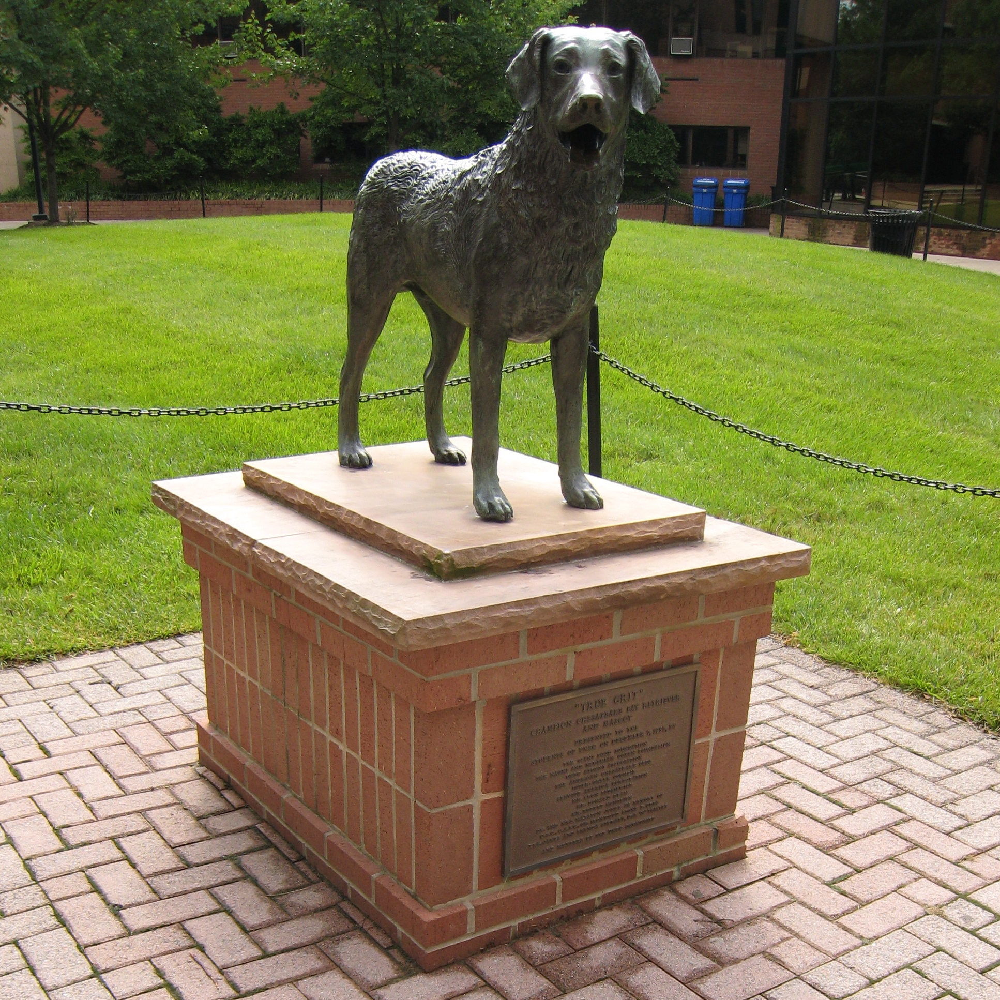

About
In this lab, we look at using and improving language tools to make better, human-centered artifical intelligence (AI). We are currently working on neurosymbolic methods for playing Dungeons & Dragons and speech synthesis for accessibility.
Location
Information Technology and Engineering (ITE) 368
Lab Members
Director

Dr. Lara J. Martin, Assistant Professor in CSEEshe/they [website] [ Dr. Lara J. Martin is an assistant professor at the University of Maryland, Baltimore County in the CSEE department, researching human-centered artificial intelligence with a focus on natural language processing applications. They have worked in the areas of automated story generation, augmentative and alternative communication (AAC) tools, AI for tabletop roleplaying games, speech processing, and affective computing—publishing in top-tier conferences such as AAAI, ACL, EMNLP, and IJCAI. They have also been featured in Wired and BBC Science Focus magazine. Previously, Dr. Martin was a 2020 Computing Innovation Fellow (CIFellow) postdoctoral researcher at the University of Pennsylvania working with Dr. Chris Callison-Burch. She earned her PhD in Human-Centered Computing from the Georgia Institute of Technology, where she worked with Dr. Mark Riedl. She also has a MS in Language Technologies from Carnegie Mellon University and a BS in Computer Science & Linguistics from Rutgers University—New Brunswick.
|
PhD Students
Patty Delafuente, PhD Student in Computer Scienceshe [website] [ Patty Delafuente is a Data Scientist that supports the Public Sector team at NVIDIA. She is an AI Enthusiast with over 20 years of experience in Data Engineering and Analytics. She focuses much of her time helping Civilian customers accelerate their data science, NLP, and computer vision workloads with NVIDIA RAPIDS, NeMo, and the TAO Toolkit. She is a certified Deep Learning Institute Instructor and teaches multiple deep learning and large language model workshops for NVIDIA Deep Learning Institute. She holds a Master of Science in Analytics from Texas A&M and is currently pursuing her PhD in Computer Science at UMBC. She is part of the Adjunct Faculty at UMBC and occasionally teaches an Applied AI course for the Graduate Data Science Program. Her research areas are focused around managing application state and researching techniques such as reinforcement learning to improve agent planning within large language model applications.
|

Shawn Bray, PhD Student in Computer Engineeringhe [ |
Masters Students
Shadab Choudhury, MS Student in Computer Sciencehe [website] [ |
Naren Sivakumarhe [ |
June Youngshe/they [ |